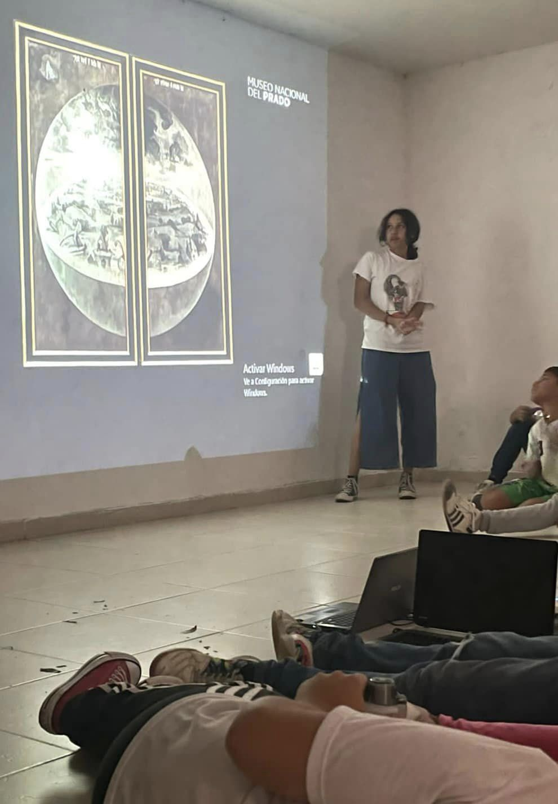
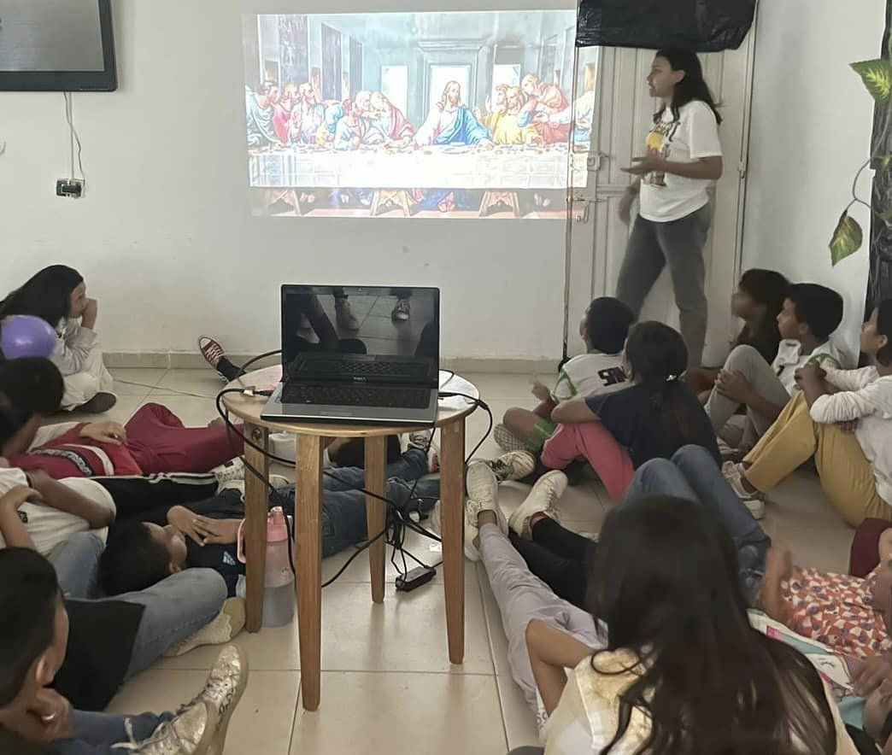
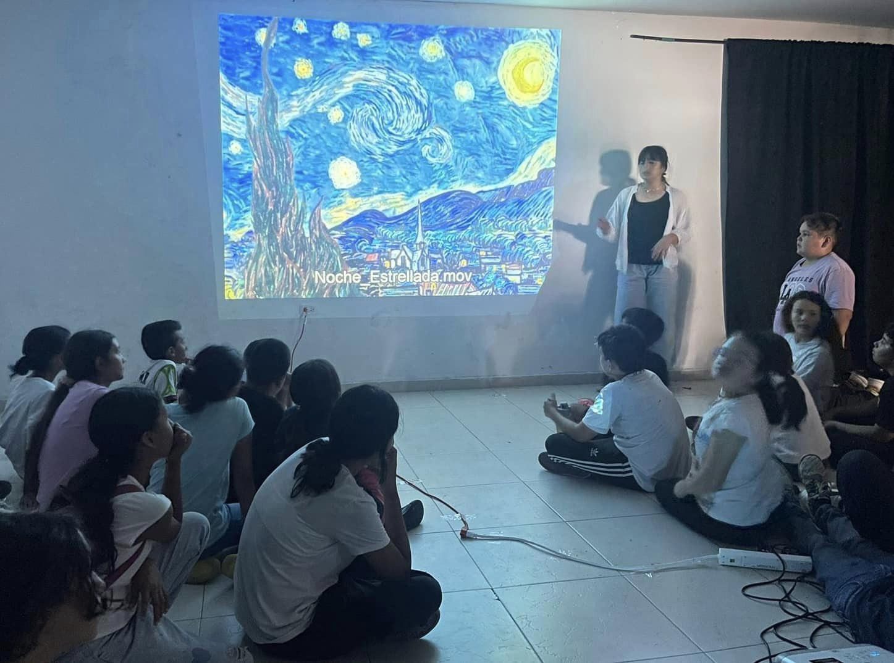
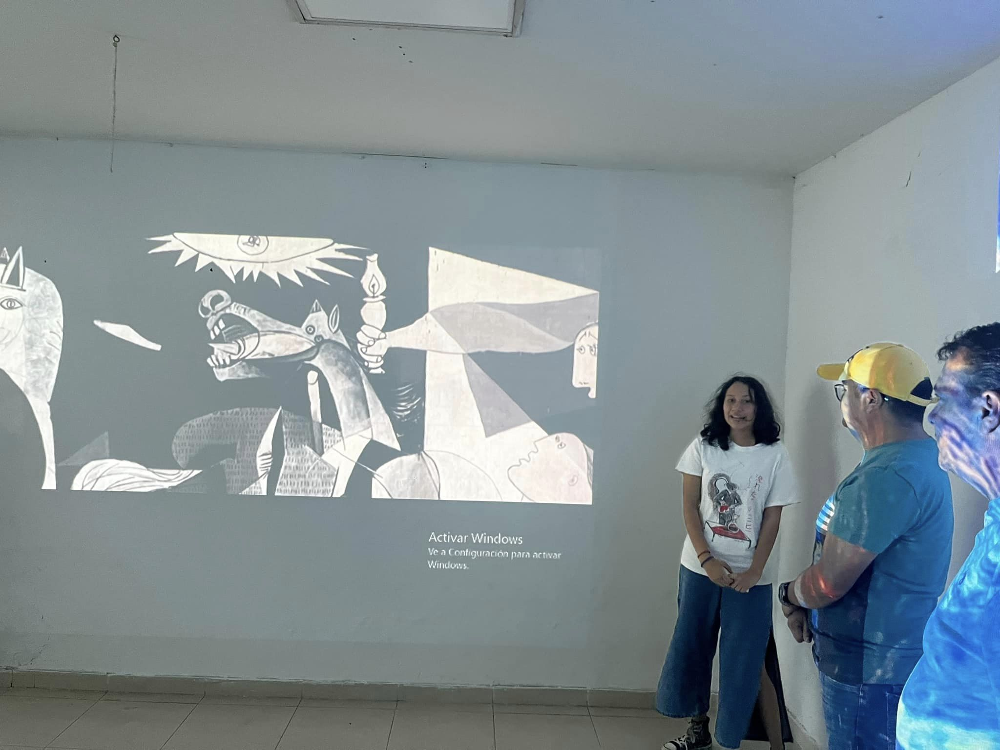

La investigación “El impacto del arte en la sociedad a través de la historia”, habla sobre la forma en la que el arte se transforma con los cambios que se dan en la sociedad. Demostrando así, su importancia.
Asimismo, se abordan las obras más icónicas de la historia y su impacto en la sociedad. De esta manera, se hará referencia a los diferentes movimientos artísticos que han existido a lo largo de la historia y cómo continúan siendo relevantes en la actualidad.
Para demostrarlo, se creó una experiencia visual llamada "Sintiendo con el Arte" en la que se presentó a niños desde párvulos hasta noveno grado del Liceo Freire. Posteriormente, se les hicieron diversas preguntas acerca de la experiencia.